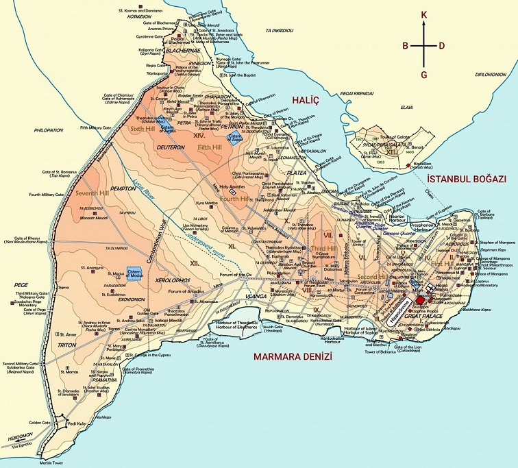
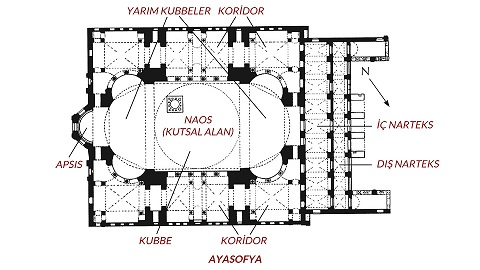
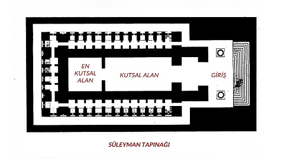
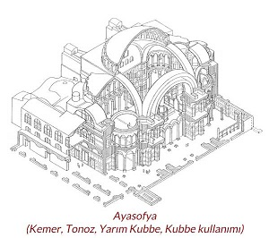
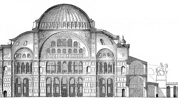
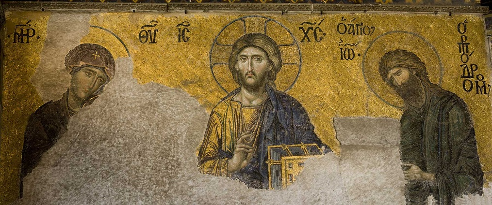
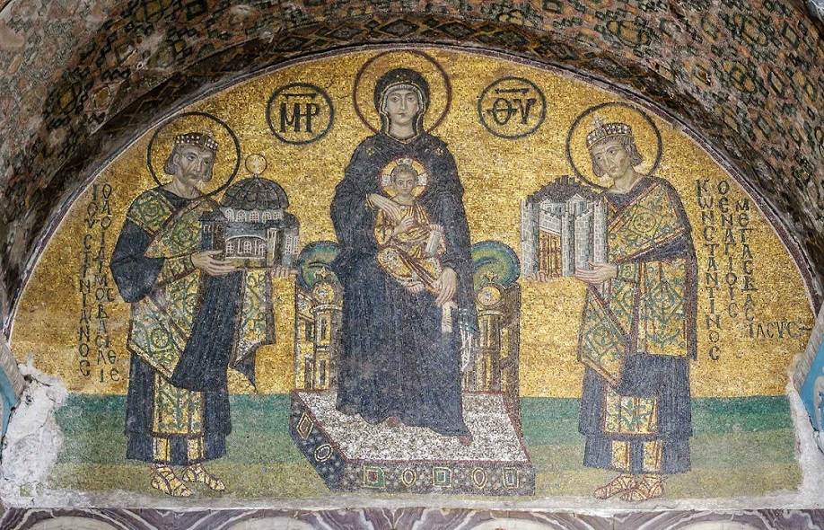

Ayasofya Camii / Müzesi
AçıklamaAyasofya Neden Camii oldu:Ayasofya Doğu Roma İmparatorluğu’nun İstanbul’da yapmış olduğu en büyük kilise olup aynı yerde üç kez inşa edilmiştir. İlk yapıldığında Megale Ekklesia (Büyük Kilise) olarak adlandırılmış, 5'inci yüzyıldan İstanbul'un fethine kadar Hagia Sophia (Kutsal Bilgelik) olarak isimlendirilmiştir. İmparator Konstantios tarafından 360 yılında yaptırılan Megale Ekklesia ve İmparator II. Theodosis’in 415 yılında yeniden inşa ettirdiği kilise halk ayaklanmalarında yıkılmıştır. Günümüz Ayasofya’sı, İmparator Justinianos tarafından dönemin iki önemli mimarı Tralles’li (Aydın) Anthemios ve Miletos’lu (Balat) İsidoros’a yaptırılmıştır. 16'ncı ve 17'nci yüzyıllarda, Ayasofya'nın içine mihraplar, minber, müezzin mahfilleri, vaaz kürsüsü ve maksureler eklenmiştir.Yapının dışına farklı dönemlerde yaptırılan minareler, medrese, sıbyan mektebi, muvakkithane, şadırvan, sebiller, güneş saatleri, mütevelli heyeti odası ile Ayasofya, Osmanlı Dönemi'nde kompleks bir yapıya dönüştürülmüştür. Ayasofya’nın tarihine bakabilmemiz için önce İstanbul tarihine, dolayısıyla Roma İmparatorluğu’na ve Roma İmparatorluğu’nun Hristiyanlaşma sürecine göz atmamız gerekiyor: Roma İmparatorluğu’nun başkenti bilindiği üzere Roma’dadır. İsa Mesih’in çarmıha gerilip Romalılar tarafından öldürülmesi ve dirilmesi (MS.33) sonrasında, İsa Mesih’in öğrencileri özellikle Roma İmparatorluğu’nun şehirlerinde İsa Mesih’in müjdesini yaymaya başlarlar. Roma İmparatorluğu’nun siyasi ve kültürel yapısına uymamasından dolayı, Hristiyanlık yasak bir din olarak kabul edilir. Hristiyanlar bu yasaktan dolayı 300 yıl boyunca farklı imparatorların elinde zulme uğrarlar. Bu zulmün doruk noktası M.S 284 – 305 tarihleri arasında İmparator olan Diocletian zamanında olur. Bugünkü İzmit bölgesinde yer alan Nicomedia adlı şehirde, yazlık sarayından Roma İmparatorluğunu yöneten Diocletian öldükten sonra taht kavgası başlar. Dört komutan kendi aralarında savaşa girişirler. Bu taht kavgasından Konstantin galip çıkar ve Roma İmparatorluğu’nun tahtına geçer. Konstantin, kendisini imparator yapacak son galibiyetinin öncesinde, bir rüyada, göklerde, “XP” işaretini görür. Bu işaret Antik Yunanca’da ”Χριστός” (Mesih) kelimesinden gelmektedir. Bu, onun Hristiyanlığa yakınlaşmasını sağlar ve Konstantin ile birlikte Hristiyanlar yaklaşık 300 yıl süren zulümden kurtulur. Konstantin daha sonra İmparatorluğun başkentini Roma yerine Byzantium ilan eder. Byzantium bugün Sultanahmet ya da Tarihi Yarımada denilen bölgedir. Bu bölgenin seçilmesi stratejik olarak önemlidir. Bir yarımada olması dolayısıyla daha güçlü bir şekilde savunulabilir ve Doğu ile Batı arasında merkezi bir konuma sahiptir. Konstantin M.S 330 yılında Roma İmparatorluğu’nun başkentini bu bölgeye taşır ve ismini Nova Roma, yani, Yeni Roma koyar. Konstantin’in ölümünden sonra insanlar şehre, Konstantin’in şehri anlamına gelen, Konstantinopolis ismini verirler.  Ayasofya’nın Tarihi: Ayasofya yapılmadan önce, aynı yerde yapılmış olan iki farklı kilise vardır. Bunlardan ilki Konstantin’in oğlu olan Konstantius tarafından 360 yılında yapılmış olan kilisedir. Bu kiliseye Megale Eklesia, yani, Büyük Kilise ismi verilir. İmparator Arkadius zamanında, M.S. 404 yılında çıkan isyanlar sırasında yanar. Arkadios’tan sonra tahta çıkan 2. Teodosius, yıkılan bu kilisenin yerine yeni bir kilise yaptırır. Bu ikinci kilise M.S. 532’ye kadar ayakta kalır. M.S. 532 yılında İmparator Justinianus zamanında şehir halkı, huzursuzluk dolayısıyla büyük bir isyana başlar. Tarihte Nika Ayaklanması olarak geçen bu ayaklanma, neredeyse tüm şehrin büyük hasar görmesine neden olur. Justinianus bu isyanı bastırır, ancak şehrin yeniden kurması gerektiğini anlar. Bu Justinianus için bir fırsattır ve şehri yeniden inşa etmek için hazırlıklara başlar. Konstantin nasıl Yeni Roma’yı kurmak istediyse, Justinianus’un de buna benzer bir amacı vardır. Ancak bu sefer Yeni Roma yerine Yeni Yeruşalim’i, yani Yeni Kudüs’ü kurmayı amaçlar. Bilindiği gibi Yeruşalim, yani Kudüs, bütün ilahi dinler için çok önemli ve kutsal bir şehirdi. Bunun en önemli nedeni de orada önce Süleyman tarafından yapılmış olan ve M.Ö. 6. yy’da yıkıldıktan sonra tekrar inşa edilen Kudüs Tapınağı’dır. Bu tapınak Tanrı’nın halkıyla buluştuğu yerdi. Dolayısıyla en kutsal yer olarak kabul ediliyordu. İşte Justinianus de Yeni Yeruşalim’in inşa ederken, bir yandan Yeni Tapınağı inşa etmek istiyordu. Dolayısıyla Ayasofya mimarisine bakarken, Kudüs’teki Süleyman Tapınağı mimarisi ışığında bakacağız. Justinianus dönemin en önemli iki mimarını huzuruna çağırır ve planından bahseder. Bu mimarlar Trallesli Antemius ve Miletli İsidoros’tur. Antemius ve İsidorus plana bakarak bu binanın yapılmasının imkansız olduğu konusundaki görüşlerini belirtirler; ancak Justinianus kararlıdır. Bu kilisenin yapılması gerekmektedir. İnşaat 23 Şubat 532 tarihinde başlar ve kilise 27 Aralık 537 tarihinde ibadete açılır. Ayasofya inşa edildiğinde, piramitler dışında dünya üzerindeki en büyük binaydı ve yaklaşık 1000 yıl boyunca böyle kaldı. Kubbesi 1000 yıl boyunca en geniş ve yüksek kubbe olarak kabul edildi.  Ayasofya’nın Mimarisi:
Ayasofya’nın mimarisini bu derece zor kılan, hatta yapımının imkansız olduğunun düşünülmesine neden olan temel özellik, dikdörtgen bir bina üzerine kubbenin yapılması planıydı. Bu Justinianus için çok önemliydi. Peki bunu nasıl gerçekleştireceklerdi? İlk önce ana kubbeyi taşıyacak olan dört ana kemer yapılması gerekiyordu. Bu dört ana kemer kubbeyi taşıyacaktı; ancak kemerler kenarlarda boşluk kalacak karelerken, kubbe yuvarlak olacaktı. Bu da kubbenin tam anlamıyla desteklenmesine engel olacaktı. Dolayısıyla kemerleri boş olan kısımlarına, ters üçgen şeklinde bingiler (pendentive) inşa edildi. Böylece kubbe dengeli bir şekilde desteklenebilecekti. Ancak bu sefer de yeni bir zorlukla karşı karşıya kalacaklardı. Kubbenin kendi ağırlığı ve yer çekiminin de etkisiyle kubbe kendisini taşıyan kemerleri dışa doğu itecekti ve bu etkiyle yıkılma tehlikesi yaşayacaklardı. Dolayısıyla kubbeyi taşıyan kemerlerin desteklenmesi gerekecekti. Bu amaçla Kuzey ve Güney kemerleri ana yarım kubbelerle ve her bir yarım kubbenin üç yarım kubbeyle desteklenmesi fikrine yoğunlaşılmıştı. Ancak ana tapınma alanının (Naos’un) dikdörtgen biçiminde olması hedeflendiği için, Doğu ve Batı kemerlerinin yarım kubbelerle desteklenmesi mümkün değildi. Bunun yerine binanın doğu ve batı tarafındaki koridorlarda, ana kemerlere 90 derece kemerler inşa edilip koridorun bir destek işlevi görmesi sağlanacaktır.   Deesis Mozaiği:
Sinod salonunun içinde duvarda muhteşem bir mozaik panel vardır. Bu parça mozaik sanatının en önemli eserlerinden birisidir. Mozaiğin ismi Deesis’tir ve üç kişiden oluşur. Bu üç kişiden ortadaki, Rab ve Kral olan İsa Mesih’tir. İsa Mesih’in sağında annesi Bakire Meryem yer alır. İsa Mesih’in solunda ise Vaftizci Yahya bulunur. Deesis, dua ve yakarış anlamlarına gelir. Bu mozaiğin teması son yargı günüdür. İsa Mesih son yargı gününde dünyayı yargılayacaktır. Bu sahnede Bakire Meryem ve Vaftizci Yahya, insanları günahlarının bağışlanması için İsa Mesih’e dua etmektedir. İsa Mesih çarmıhtaki harika fedakarlığını bir seferde ve herkes için vermiştir. Bu olağanüstü zaferde zaman sınırı yoktur; çünkü O, zamandan ve mekandan bağımsız bir Rab’dir. Bu mozaikteki mesaj da bu düşünceyi destekler. İsa Mesih’e son yargı gününde dua eden kişiler rast gele seçilmemişlerdir. Bakire Meryem ve Vaftizci Yahya’nın olması tam da bu mesajı vermek içindir. Vaftizci Yahya İsa Mesih’i müjdeleyen son peygamberdir. Bakire Meryem de iyi haberi duyan ilk kişidir. Vaftizci Yahya, Eski Antlaşma, yani Yasayı ve peygamberlikleri temsil ederken; Bakire Meryem, Yeni Antlaşma’yı yani yasanın ve peygamberliklerin tamamlanmasını temsil eder. Yasa ve Lütuf, Mesih’te tamamlanır. Bu mozaikle yasa ve aklanma kavramlarının derin bir mesajı verilir.  Çıkıştaki Konstantin ve Justinianus Mozaiği: Ayasofya Müzesi’nin çıkışında bir son bir mozaik vardır. 10. yy’da yapılmış olan bu mozaikte İstanbul’un kurucusu Konstantin ve Ayasofya’yı yaptıran Justinianus’un eserlerini bir maket şeklinde İsa Mesih’e adadıklarını görürsünüz. 
|
|
Yaz Dönemi 1 Nisan - 31 Ekim Açılış Saati: 09:00 Kapanış Saati: 19:00 |
Kış Dönemi 31 Ekim - 1 Nisan Açılış Saati: 09:00 Kapanış Saati: 18:00 |
|
Gişe Yaz / Kış Kapanış Saatleri Yaz Dönemi: 18:00 Kış Dönemi: 17:00 |
Adres: Ayasofya Meydanı No:1 34122 Sultanahmet E-mail: ayasofyamuzesi@ktb.gov.tr |
|
Kapalı Günler Pazartesi |
Müze Ücreti : 100 TL - Durum : KISMEN KAPALI |